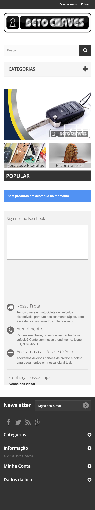
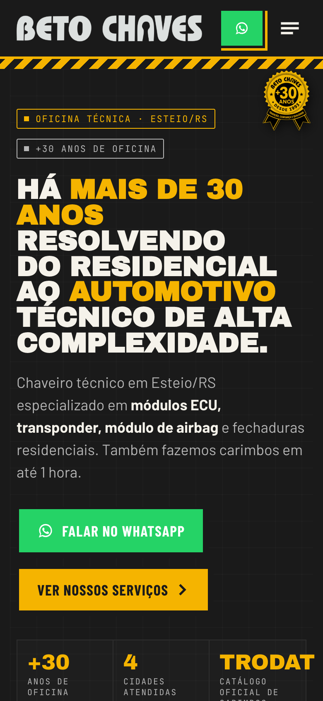
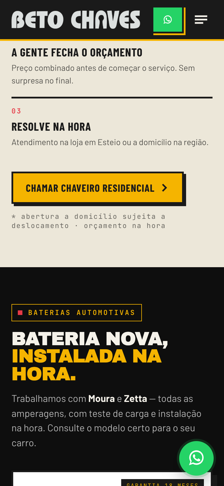

imagem de fundo gerada
raio-x · site de jan/2024
3problemas que custavam clientes.
Site real, de jan/2024. 20 segundos.
o contexto
Oficina de 30 anos. Site de loja genérica.
Busca, “Entrar”, categorias — como qualquer loja online.
problema 01
01A primeira dobra diz que não tem nada.
“Sem produtos em destaque no momento.” — texto literal da página, jan/2024.
problema 02
02Foto sem relação com a oficina. E um quadro vazio.
Nada da oficina de verdade — nem fachada, nem gente, nem uma avaliação.
problema 03
03O telefone, só no fim da página.
Para ligar, tem que rolar tudo. Nenhum WhatsApp, nenhum botão.
antes · jan/2024
01 · nada em destaque
02 · genérica · quadro vazio
03 · telefone só no fim

o mesmo negócio, hoje
O que custava clientes virou o que traz.
Mesma oficina. Site feito para ela — foto real, contato a um toque, prova na página.
hoje


foto e história reais
WhatsApp a um toque
avaliação real na página
raio-x · grátis
Quer o RAIO-X do seu site?
Manda o link — ou o Instagram da empresa. A gente devolve os 3 pontos.
manda RAIO-X no direct
de graça · sem call

stormstudio.dev
raio-x · 01